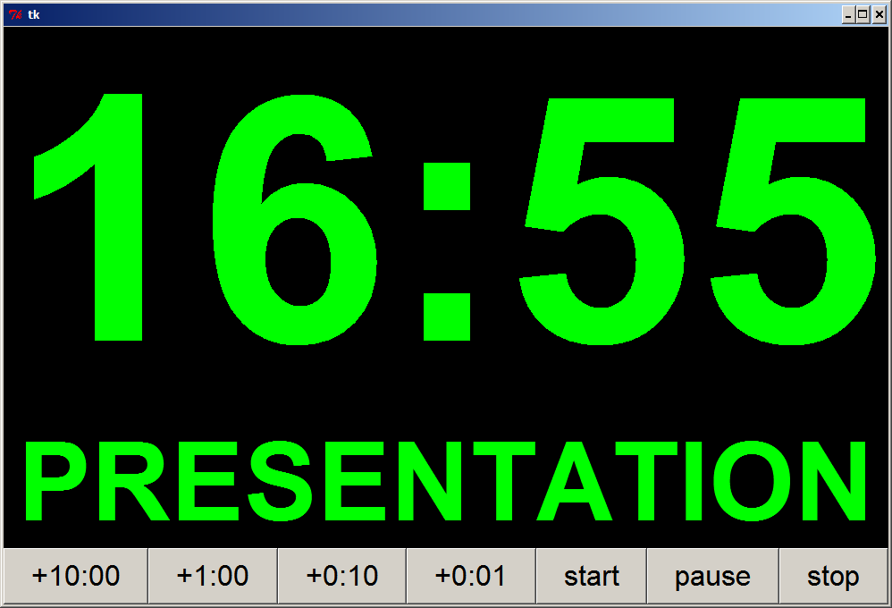
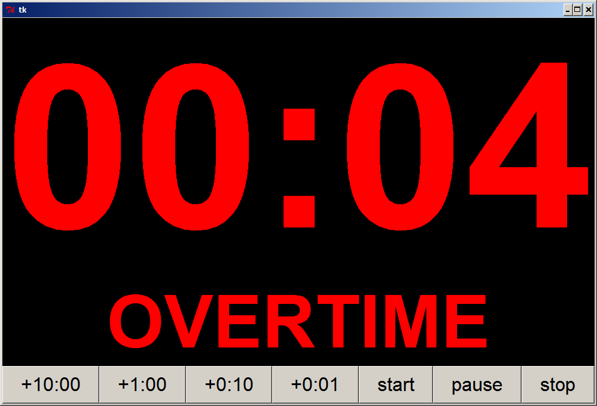

Pete R. Jemian, jemian@anl.gov
last updated: 2006-09-04
|
|
Pete Jemian Python tools: speaker timer
Pete R. Jemian, jemian@anl.gov last updated: 2006-09-04 |
| Summary: Provides speakerTimer.py, Python support to display a clock of time remaining for speakers in a conference session |
> 05:00 green PRESENTATION
> 00:00 yellow DISCUSSION
< 00:00 red OVERTIME
05:00 1 beep
00:00 2 beeps
-01:00 3 beeps (at each minute)
| Initial screen is blank (since the timer is not programmed yet). Note the configuration buttons at the bottom. +10:00 will add 10 minutes to the countdown timer clock. The other buttons are similar. start, pause, and stop are intuitive. stop is also be used to clear the countdown timer before counting is started. |

|
| This speaker has 25 minutes for a presentation. Have the session moderator or monitor press the start button when the speaker starts. |

|
| The talk has begun. Countdown timer is churning away. Timer will beep once when time reaches 5 minutes. |  |
| The talk has been paused. Maybe some problem with the projector? |

|
| The talk has only a short time left. Time to consider audience questions. Timer will beep twice when clock reaches zero. |

|
| Time has run out. Speaker should wrap things up. Timer will beep 3 times every minute into overtime. |  |
#! /bin/env python """ file: speakerTimer.py author: Pete R Jemiancreated: 2006-07-27 revised: 2006-09-04 purpose: Display a clock of time remaining for speakers in a conference session This simple tool has been useful in helping conferences stick close to the schedule. The user interface is simple. Add time to the clock for the presentation. If too much time is added, press stop to clear and re-enter the time needed. Start the timer when the speaker starts. Pause if necessary. Press start to resume. Stop the timer when the presentation is done. Clock will clear on stop or when pause is in overtime. > 05:00 green PRESENTATION > 00:00 yellow DISCUSSION < 00:00 red OVERTIME 05:00 1 beep 00:00 2 beeps -01:00 3 beeps (at each minute) """ import time import Tkinter params = {} ###################################################################### # # setDefaults # define/reset the defaults for this tool # def setDefaults (params): params["timerFontSpec"] = ("", 288, "bold") params["phaseFontSpec"] = ("", 92, "bold") params["buttonFontSpec"] = ("", 24, "") params["updatePoll_ms"] = 250 params["discussionTime_sec"] = 300 params["overtimeReminder_sec"] = 60 params["text,next"] = "NEXT" params["text,discussion"] = "DISCUSSION" params["text,paused"] = "PAUSED" params["text,presentation"] = "PRESENTATION" params["text,overtime"] = "OVERTIME" params["text,start"] = "start" params["text,pause"] = "pause" params["text,stop"] = "stop" params["total_secs"] = 0 params["afterID"] = 0 ###################################################################### # # setDisplayColor # sets the color of the timer display # def setDisplayColor (params, color): params["displayColor"] = color try: params["timerTextWidget"]["foreground"] = color params["phaseTextWidget"]["foreground"] = color #print "timerTextWidget[foreground] = ", params["timerTextWidget"]["foreground"] #print "phaseTextWidget[foreground] = ", params["phaseTextWidget"]["foreground"] except: print "could not access GUI widgets" return ###################################################################### # # emptyAfterEvents # clear the "after" event queue # def emptyAfterEvents (params): if (params["afterID"] != 0): params["tk"].after_cancel(params["afterID"]) params["afterID"] = 0 ###################################################################### # # _fallback_boing # sound the bell using a fallback method such as curses # def _fallback_boing (): try: # try using curses import curses curses.initscr() curses.beep() curses.endwin() return except: # maybe flash the screen return ###################################################################### # # _boing # sound the bell # def _boing (): # curses has beep() # Tkinter has bell() # wx has bell() # ASCII ^g (string escape code: \a ) is a bell import sys if sys.platform == "win32": try: import winsound # winsound.MessageBeep() uses default system message sound winsound.MessageBeep() # winsound.beep() ignores system sound settings (for mute and volume) # winsound.Beep(1200,100) # 1200Hz for 100ms return except: _fallback_boing() return else: # non-Windows systems _fallback_boing() return ###################################################################### # # boing # sound the bell n times # def boing (params, n): _boing() for item in range(n-1): params["tk"].after(100) _boing() ###################################################################### # # showTime # shows the speaker timer # def showTime (params): timeNow = time.time() theTime = params["endTime"] - timeNow mins = abs(int(theTime)) / 60 secs = abs(int(theTime)) % 60 params["timerTextWidget"]["text"] = "%02d:%02d" % (mins, secs) # shall we make it audible? # this method expects that we get called within one update period of a beep time # Better to trigger a beep to happen after some time has been passed. diffTime = theTime - params["discussionTime_sec"] if (abs(diffTime) < 0.001*params["updatePoll_ms"]): if (diffTime < 0): boing(params, 1) if (abs(theTime) < 0.001*params["updatePoll_ms"]): if (theTime< 0): boing(params, 2) if (theTime < -10): ot_secs = abs(theTime) % params["overtimeReminder_sec"] if (ot_secs < 0.001*params["updatePoll_ms"]): boing(params, 3) #print theTime, ot_secs # shall we make change the color? if (theTime < 0): # OVERTIME setDisplayColor(params, "red") params["phaseTextWidget"]["text"] = params["text,overtime"] else: if (theTime < params["discussionTime_sec"]): # DISCUSSION setDisplayColor(params, "yellow") params["phaseTextWidget"]["text"] = params["text,discussion"] else: # PRESENTATION setDisplayColor(params, "green") params["phaseTextWidget"]["text"] = params["text,presentation"] emptyAfterEvents(params) params["afterID"] = params["tk"].after(params["updatePoll_ms"], showTime, params) ###################################################################### # # addTimer # adds seconds into the speaker timer # def addTimer (params, seconds): params["total_secs"] += seconds mins = int(params["total_secs"] / 60) secs = params["total_secs"] % 60 try: params["timerTextWidget"]["text"] = "%02d:%02d" % (mins, secs) #params["phaseTextWidget"]["text"] = "" params["phaseTextWidget"]["text"] = params["text,next"] except: print "could not access GUI widgets" setDisplayColor(params, "white") ###################################################################### # # startTimer # starts the speaker timer # def startTimer (params): #print params if (params["total_secs"] <= 0): return params["startTime"] = int(time.time()) params["endTime"] = params["startTime"] + params["total_secs"] emptyAfterEvents(params) params["afterID"] = params["tk"].after(params["updatePoll_ms"], showTime, params) ###################################################################### # # pauseTimer # pauses the speaker timer # def pauseTimer (params): if (params["total_secs"] <= 0): return #print params["total_secs"] #print params["phaseTextWidget"]["text"] #print params["text,paused"] if (params["phaseTextWidget"]["text"] == params["text,paused"]): # Could enable resume here by pressing pause # But for now, just ignore repeated presses of pause # startTimer return timeNow = int(time.time()) theTime = params["endTime"] - timeNow #print timeNow, theTime if (theTime <= 0): stopTimer(params) return params["total_secs"] = theTime params["phaseTextWidget"]["text"] = params["text,paused"] setDisplayColor (params, "white") emptyAfterEvents(params) ###################################################################### # # stopTimer # stops the speaker timer # def stopTimer (params): emptyAfterEvents(params) params["total_secs"] = 0 params["total_secs"] = 0 params["total_secs"] = 0 params["timerTextWidget"]["text"] = "" params["phaseTextWidget"]["text"] = "" setDisplayColor(params, "white") #update idle ###################################################################### # # button presses # def p10m_ButtonPressed(): addTimer(params, 600) def p1m_ButtonPressed(): addTimer(params, 60) def p10s_ButtonPressed(): addTimer(params, 10) def p1s_ButtonPressed(): addTimer(params, 1) def start_ButtonPressed(): startTimer(params) def pause_ButtonPressed(): pauseTimer(params) def stop_ButtonPressed(): stopTimer(params) ###################################################################### # # define_GUI # define the GUI for this tool # def define_GUI (params): params["tk"].grid() params["tk"].grid_columnconfigure(0, weight=1) params["tk"].grid_rowconfigure(0, weight=1) timer = Tkinter.Frame(params["tk"], bg = "black") timer.grid(sticky = "news") timer.grid_columnconfigure(0, weight=1) phase = Tkinter.Frame(params["tk"], bg = "black") phase.grid(sticky = "news") phase.grid_columnconfigure(0,weight=1) controls = Tkinter.Frame(params["tk"], bg = "grey") controls.grid(sticky = "news") controls.grid_columnconfigure(0,weight=1) params["timerTextWidget"] = Tkinter.Label(timer) params["timerTextWidget"]["text"] = "" params["timerTextWidget"]["font"] = params["timerFontSpec"] params["timerTextWidget"]["background"] = "black" params["timerTextWidget"]["foreground"] = "white" params["timerTextWidget"].grid(sticky = "news") params["phaseTextWidget"] = Tkinter.Label(timer) params["phaseTextWidget"]["text"] = "" params["phaseTextWidget"]["font"] = params["phaseFontSpec"] params["phaseTextWidget"]["background"] = "black" params["phaseTextWidget"]["foreground"] = "white" params["phaseTextWidget"].grid(sticky = "news") p10m = Tkinter.Button(controls, text="+10:00", font=params["buttonFontSpec"]) p1m = Tkinter.Button(controls, text="+1:00", font=params["buttonFontSpec"]) p10s = Tkinter.Button(controls, text="+0:10", font=params["buttonFontSpec"]) p1s = Tkinter.Button(controls, text="+0:01", font=params["buttonFontSpec"]) start = Tkinter.Button(controls, text="start", font=params["buttonFontSpec"]) pause = Tkinter.Button(controls, text="pause", font=params["buttonFontSpec"]) stop = Tkinter.Button(controls, text="stop", font=params["buttonFontSpec"]) p10m.configure( command = p10m_ButtonPressed) p1m.configure( command = p1m_ButtonPressed) p10s.configure( command = p10s_ButtonPressed) p1s.configure( command = p1s_ButtonPressed) start.configure(command = start_ButtonPressed) pause.configure(command = pause_ButtonPressed) stop.configure( command = stop_ButtonPressed) p10m.grid( sticky = "news", row=0, column=0) p1m.grid( sticky = "news", row=0, column=1) p10s.grid( sticky = "news", row=0, column=2) p1s.grid( sticky = "news", row=0, column=3) start.grid(sticky = "news", row=0, column=4) pause.grid(sticky = "news", row=0, column=5) stop.grid( sticky = "news", row=0, column=6) for item in range(7): #print item controls.grid_columnconfigure(item, weight=1) #---------------------------------------------------------------------- def usual_main (params): setDefaults(params) params["tk"] = Tkinter.Tk() define_GUI(params) #addTimer(params, 300) #addTimer(params, 6) params["tk"].mainloop() def test_main (params): addTimer(params, 300) addTimer(params, 7) if __name__ == "__main__": usual_main(params) #test_main(params)
An alternative version (prior) of this tool is available that implements the same functionality in Tcl/Tk. (speakerTimer.tcl)
| This handy utility provided by Pete Jemian: http://www.uni.aps.anl.gov/~jemian |
|

|